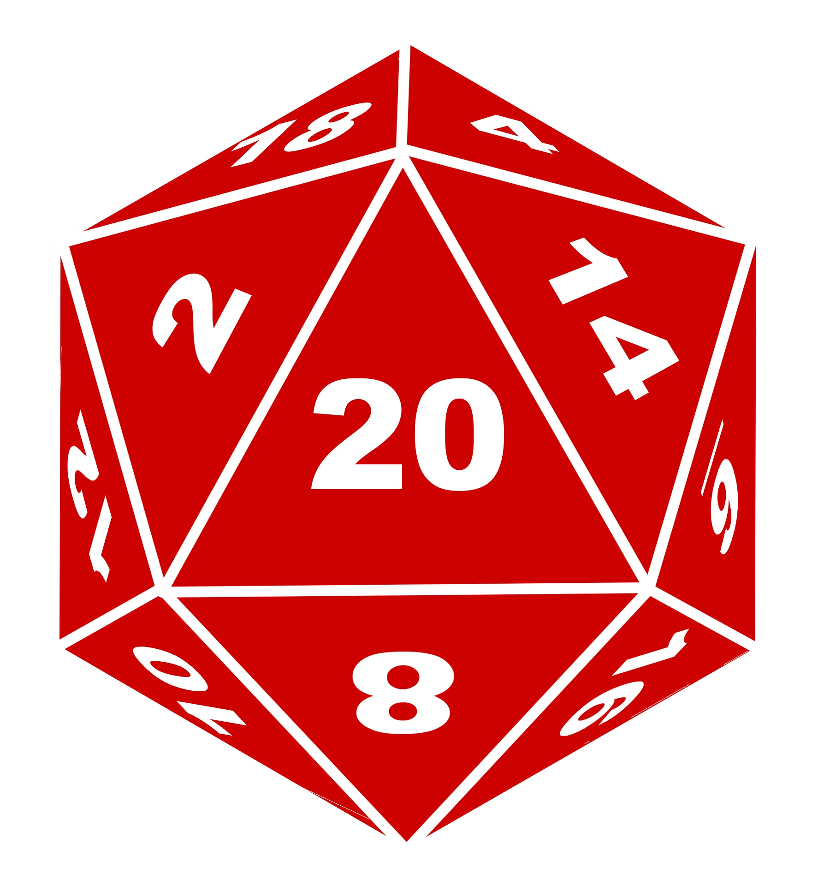

Skills represent the things a character is naturally good at or has trained to do. Each skill is tied to one of the six ability scores, and together they cover everything from climbing and sneaking to persuading and investigating.
When a character attempts something challenging, the DM may call for a skill check to see how successful they are. Skills help determine how well a character performs actions outside of combat.
If a character is proficient in a skill, they add their proficiency bonus to that skill’s rolls. This represents training or natural talent. Being proficient makes the character noticeably better at that skill compared to others.
Below is a list of the skills in the game, formatted as:
Skill Name (Associated Ability): Brief Description of What It Does.
Acrobatics (Dexterity): Balancing, tumbling, and avoiding falls.
Animal Handling (Wisdom): Calming animals and controlling mounts.
Arcana (Intelligence): Knowledge of magic and magical creatures.
Athletics (Strength): Climbing, jumping, and physical feats.
Deception (Charisma): Lying, bluffing, and misleading others.
History (Intelligence): Knowledge of past events and cultures.
Insight (Wisdom): Reading people and sensing motives.
Intimidation (Charisma): Influencing others through fear or force.
Investigation (Intelligence): Searching for clues and solving puzzles.
Medicine (Wisdom): Diagnosing injuries and stabilizing the dying.
Nature (Intelligence): Knowledge of plants, animals, and environments.
Perception (Wisdom): Noticing details and spotting hidden things.
Performance (Charisma): Entertaining through music, acting, or art.
Persuasion (Charisma): Convincing others through charm or logic.
Religion (Intelligence): Knowledge of gods, rituals, and beliefs.
Sleight of Hand (Dexterity): Picking pockets and subtle hand tricks.
Stealth (Dexterity): Hiding and moving quietly.
Survival (Wisdom): Tracking, navigating, and predicting natural hazards.